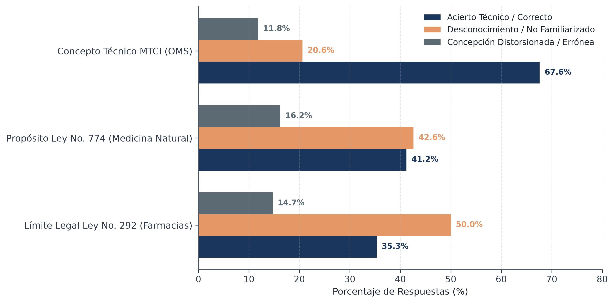
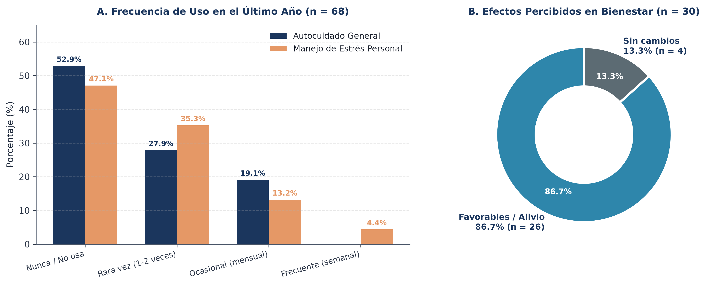
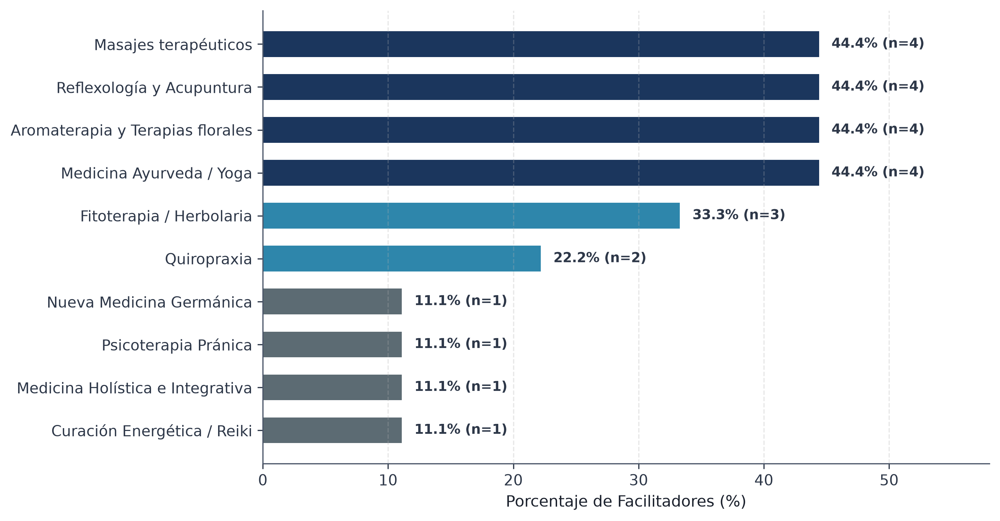
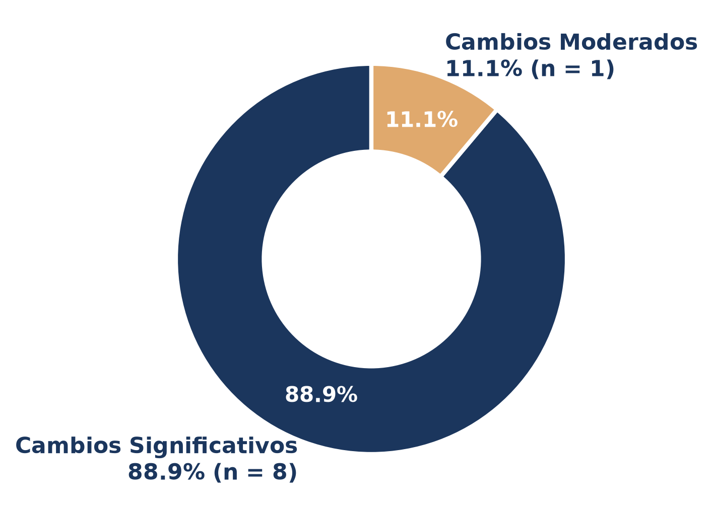
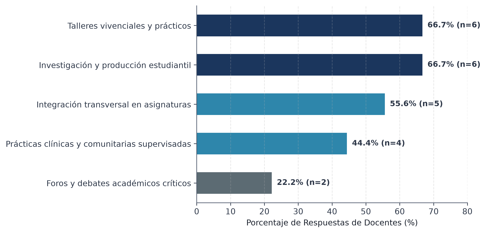
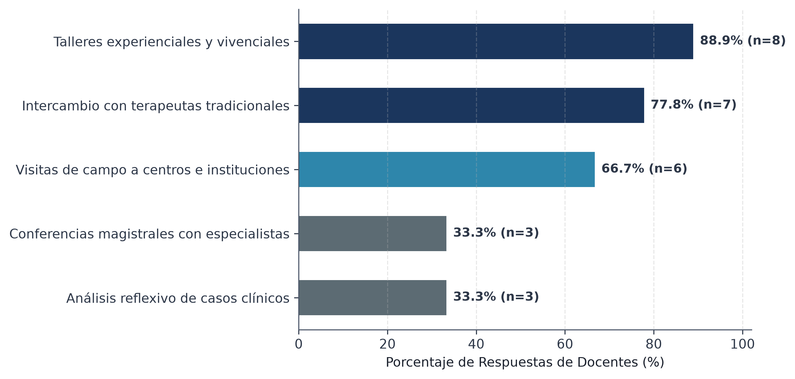
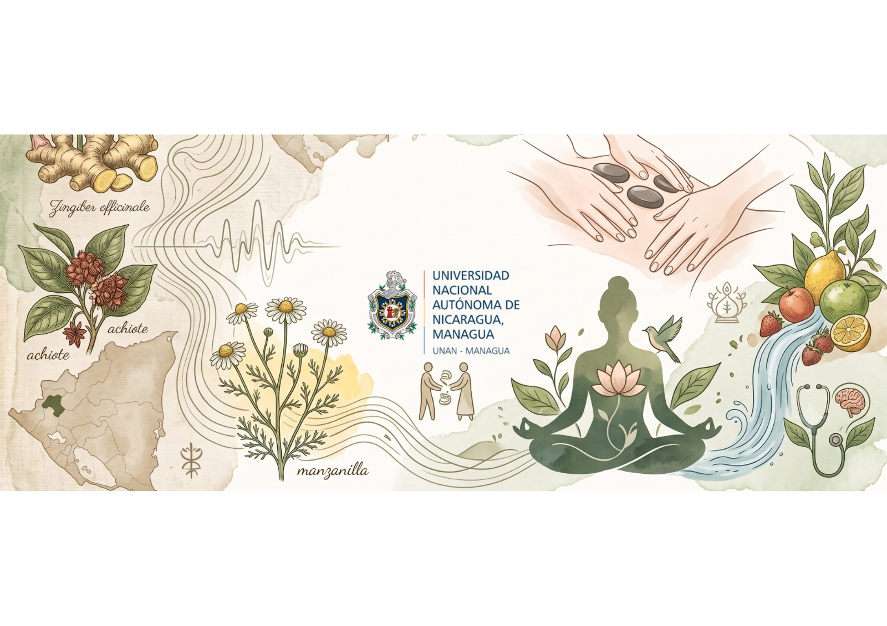

Estudio Mixto con Estudiantes y Docentes del CUR-Estelí y Facilitadores Locales del Municipio de Estelí (Segundo Semestre, 2026)
• Estrategia OMS MTCI: Marco que insta a incorporar medicinas tradicionales sobre bases de seguridad y evidencia.
• Metanálisis Clínicos: Furlan (2012) y Guo (2024) comprueban eficacia en dolor crónico, fibromialgia y estrés somático.
• Salud Mental: Sotiropoulos et al. (2025) validan técnicas de autorregulación somática en cuadros ansioso-depresivos.
• Educación Superior: Estudios en Argentina (Papalini, 2022) y Chile evidencian uso masivo de MTCI en estudiantes de salud.
• Brecha Formativa: Más del 80% recurre a MTCI en autocuidado pero reporta nula instrucción en sus facultades.
• Falta de Protocolos: Inexistencia de algoritmos para derivación clínica entre psicólogos y terapeutas tradicionales.
• Vanguardia Jurídica: Leyes 774 y 759 establecen el Instituto de Medicina Natural, pionero en Centroamérica.
• Vacío en Psicología: Ausencia de asignaturas o contenidos sobre interculturalidad en salud mental en los planes de estudio.
• Estudio CUR-Estelí (2026): Primera investigación empírica mixta que articula estudiantes, docentes y facilitadores.
Analizar la integración de la Medicina Tradicional, Complementaria e Integrativa (MTCI) como recurso complementario en la atención psicológica, a partir de las percepciones, conocimientos y prácticas de estudiantes, docentes y facilitadores locales, formulando un manual de estrategias bioéticas y formativas en el CUR-Estelí.
Caracterizar la percepción, nivel de conocimiento, frecuencia de uso y barreras autopercibidas en los estudiantes de 4.º y 5.º año de Psicología respecto a las MTCI.
Explorar las experiencias terapéuticas, prácticas tradicionales y barreras socioculturales que enfrentan los facilitadores locales de medicina tradicional en Estelí.
Diseñar un Manual de Estrategias de MTCI para la formación y práctica psicológica, fundamentado en los criterios del claustro docente y los hallazgos empíricos.
• Superación del reduccionismo mecanicista y biomédico en la comprensión del padecimiento humano.
• Integración indisoluble de dimensiones somáticas, afectivas y culturales en salud mental.
• Regulación neurovegetativa y vías somáticas Bottom-Up como base del autocuidado y la estabilidad afectiva.
• Coexistencia real del Modelo Médico Hegemónico con sistemas tradicionales y de autoatención comunitaria.
• Reconocimiento de saberes locales sin desatender el rigor metodológico y científico.
• Superación del ocultamiento terapéutico mediante una entrevista clínica empática y libre de prejuicios.
• Principio de No Maleficencia: prevención de interacciones fitofarmacológicas y riesgos toxicológicos.
• Principio de Autonomía: respeto informado a los valores, creencias y decisiones culturales del consultante.
• Delimitación Profesional: el psicólogo orienta, psicoeduca y deriva; no prescribe ni formula sustancias.
Articula métodos cuantitativos y cualitativos según su utilidad empírica para fundamentar la propuesta.
Diseño DEXPLIS (Derivativo): diagnóstico cuantitativo inicial articulado con profundización cualitativa.
Caracteriza conocimientos, actitudes y prácticas en un marco temporal definido (segundo semestre 2026).
Cuestionarios con escala Likert (I1, I2, I3), preguntas abiertas y análisis temático hermenéutico.
• Muestra Censal: 4.º año (n = 53, 77.9%) y 5.º año (n = 15, 22.1%).
• Inclusión: Matrícula activa en II Semestre 2026; cursando o habiendo cursado prácticas clínicas.
• Exclusión: Alumnado de 1.º a 3.er año o con baja académica temporal.
• Muestreo Intencional: Masoterapeutas, fitoterapeutas, sobadores y terapeutas holísticos de Estelí.
• Inclusión: Práctica activa continua mayor a 5 años en el municipio de Estelí con clientela establecida.
• Exclusión: Vendedores ambulantes sin arraigo comunitario reconocido.
• Perfil: Docentes universitarios con Licenciatura y Maestría en áreas clínicas y metodológicas.
• Inclusión: Docencia activa en UNAN-Managua CUR-Estelí y experiencia en supervisión de prácticas.
• Exclusión: Docentes de carreras no vinculadas a la Psicología.


• Carácter Reactivo: 52.9% no utiliza MTCI de forma preventiva regular; acuden solo ante sobrecarga académica.
• Eficacia en Usuarios (n = 30): 86.7% reporta alivio muscular y serenidad; 0.0% reporta efectos adversos.


• 100% Alivio Somático: Disminución de sobrecarga miofascial y recuperación de la calma.
• 88.9% Apertura Afectiva: El desbloqueo corporal incrementa la disposición al diálogo terapéutico.
• Inocuidad Percibida (100%): Cero reporte de reacciones adversas o crisis iatrogénicas en consulta.
• Barreras Socioculturales y Económicas: 77.8% enfrenta reservas religiosas y el 77.8% reporta interrupción por falta de recursos.


• 100.0% Respaldo Curricular: Apoyo unánime a transversalizar la MTCI bajo rigor científico y no prescriptivo.
• Pedagogía Vivencial (88.9%): Priorizan talleres de autorregulación somática sobre la enseñanza abstracta.
• Vinculación Comunitaria (77.8%): Respaldan intercambios con facilitadores tradicionales y visitas a centros MINSA (66.7%).
• Demanda de Capacitación: 77.8% solicita formación docente en neurobiología somática y comités de bioética.

✓ Límites Legales: Respetar estrictamente Leyes 774 y 292 (cero prescripción farmacológica).
✓ Algoritmo Clínico: Aplicar el árbol de decisión del manual en las prácticas de la Clínica Psicosocial.
✓ Diálogo Abierto: Explorar empáticamente el uso de MTCI para erradicar el ocultamiento.
✓ Transversalidad: Integrar contenidos en Psicología Clínica, Comunitaria y Ética.
✓ Pedagogía Vivencial: Priorizar análisis de casos reales y talleres de autorregulación somática.
✓ Capacitación Continua: Formarse en neurobiología somática y regulación Bottom-Up.
✓ Adopción Oficial: Formalizar la aprobación del Manual de Estrategias MTCI (Anexo 16.2).
✓ Comité de Bioética: Constituir el Comité de Ética y Delimitación Profesional.
✓ Alianza con MINSA: Consolidar convenios para pasantías y ferias de salud comunitaria.
✓ Registro Oficial: Difundir mecanismos de acreditación según Ley No. 774.
✓ Red de Interconsulta: Habilitar canales de referencia bidireccional formal.
✓ Principio Bioético: Mantener el compromiso de complementariedad sin sustitución médica.
Espacio Abierto para Preguntas, Comentarios y Defensa Oral ante el Honorable Tribunal Examinador